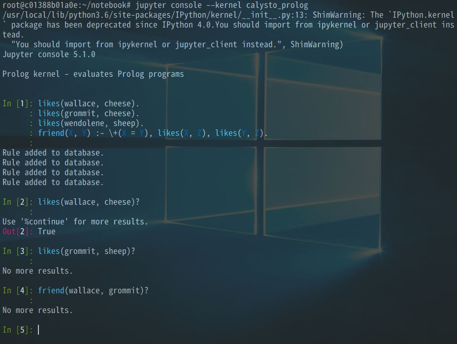
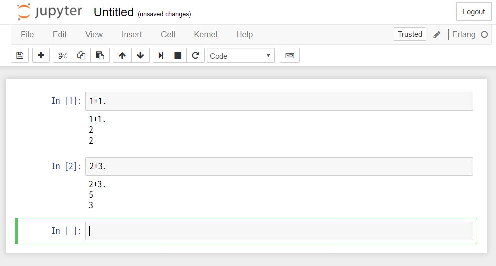
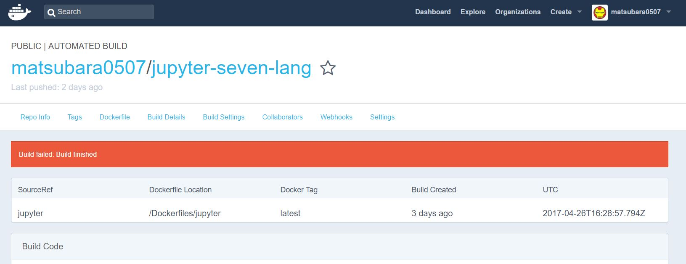
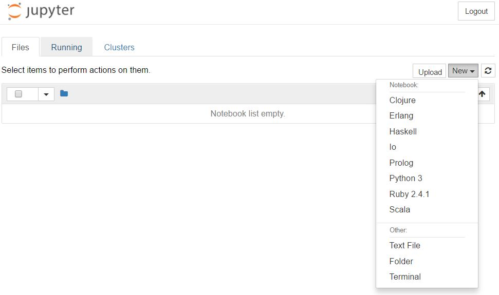

7つの言語の Juputer Notebook を作る (後半戦)
「7つの言語、7つの世界」という書籍の演習問題をやるために，それらの言語の Jupyter Kernel の入った Jupyter Notebook を作っている．
長くなりそうだったので2回に分けて，今回は後半戦．
ちなみに出来上がった Docker イメージはコレ．
前半
前半では，Ruby, Io, Scala, Clojure, Haskell を手元でビルドした．
公判では，Prolog と Erlang をビルドして，7つの言語の入った jupyter notebook を完成させる！
作る
Prolog
二転ぐらいする．
Jupyter の公式のリスト を見ると，ひとつ Prolog Kernel があった．
言わずもがな， Build できない． jupyter のバージョンが古い． README に書いてあるように，pip3 install --upgrade calysto-prolog しても動かないので，fork して書き換えることにした．
あまり，Python に詳しくないのだが，setup.py をいじるようだ．
結果こんな感じ． たしか、この Isuue を参照した気がする．
もともとは kernel_spec のインストールと setup が一緒に実行されてた． が，今の jupyter は jupyter kernelspec install でkernel_spec のインストールを行うので，分けた．
Dockerfile を書いておいたので，ビルドの仕方はそれを参照してほしい(Dockerfile 便利)．
あとでプルリク投げてみよう．
Prolog の構文ががが
うまくできた！と思って jupyter notebook (console) を起動するも…

書籍のサンプルコードが動かない…(friend(wallace, grommit)? は True でないといけない．)．
等価演算子 = などの論理演算子がデフォルトでないのだ． それもそのはずで，Calysto Prolog は Python で書かれた，独自実装のコンパクト Prologだった． それぐらい知っとけという話だ．
流石にサンプルが動かせないと 本末転倒 なので，自分で Simple Kernel を書くことにした．
できたのがコレ． これ自体は Io 言語のときと同じ様に作った． 簡単だった．
Erlang
結論: うごかない
これもバージョンのせいだと思うのだが，リストにあった IErlang がビルドできない． escript をいじってみたり、ierl_script.erl を書き換えてみたり，いろいろ試してみた． 前には進んだんだが，最終的に session socket がどーのこーのと怒られて，IErlang でパッチ当てて IPython のコードを直接書き換えてる部分なのでお手上げ侍(書き換えられたら他の言語が動かなくなるかもだし)．
直してくれてる Fork もないし，時間かかりそうだからあきらめた．
で，Io・Prolog と同じように simple kernel を書くことにした．

変な数字が入る… 原因は簡単で，simple kernel を書くときに使っている，replwrap というライブラリが，プロンプトの区切り文字を単純にしか区切らないから． つまり
def _start_erlang(self):
sig = signal.signal(signal.SIGINT, signal.SIG_DFL)
try:
self.erlangwrapper = replwrap.REPLWrapper("erl", "> ", None)
finally:
signal.signal(signal.SIGINT, sig)で，プロンプトの区切り文字を "> " で指定してるのだが，erl は
1> 1+1.
2
2> 2+3.
5
3>となり，"> " よりも前に行番号みたいのが入る． これはやっかいで，動的に変化するプロンプトの文字を区切れるかが分からない(方法はあるかも)．
いろいろ考えたが，これ以上弄ってたら終わらないので，諦めた． ちくしょう．
Scala がおや？
さぁ合体しようと思ったら，急に変なエラーが出てきた． apt-get update が通らない．
Scala の sbt をインストールしてる URL https://dl.bintray.com/sbt/debian/Release がダメみたいである． ここ最近の事象みたいで，StackOverflow にあった．
しょうがないので，scala 同様に GitHub からダウンロードしてくるように変更した．
合体
やっと合体
$ stack exec -- docker-marge ../Dockerfiles/iruby/Dockerfile ../Dockerfiles/iio/Dockerfile ../Dockerfiles/iprolog/Dockerfile ../Dockerfiles/iscala/Dockerfile ../Dockerfiles/ierlang/Dockerfile ../Dockerfiles/iclojure/Dockerfile ../Dockerfiles/ihaskell/Dockerfile > ../Dockerfiles/jupyter/Dockerfile
$ cd ../
$ docker build -t jupyter-seven-lang Dockerfiles/jupyter/Dockerfileあいかわらずものすごい時間がかかる(とくに Haskell)が手元ではビルドできた．
Docker Hub で自動ビルドしてもらったところ…

build finished とか build cancelled とか出る． なぜ…
ビルド時間のせいかもと思って，Haskell とそれ以外に分けた． でもダメ．
やっぱり，メモリの上限があるみたいで，手元では，3GBないと IHaskell をビルドできなかったので，そのせいだろう．
しょうがないから，docker push してあげた． これもいずれ直したい…
できた
壮観

おしまい
Erlang は悔しい…. 何とか，Erlang を読めるようになって動くように修正したい．
それと，本の演習やらなきゃ(わすれてたw)